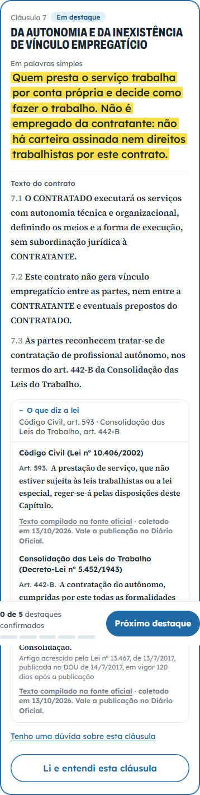

build in public · post 1
Um contrato que a pessoa entende antes de assinar. Estou construindo em público, e esta é a primeira semana.
o que existe hoje
o problema de construir rápido
Cada tela funciona. Cada teste passa. E ninguém de fora leu um contrato nele, muito menos assinou.
Num projeto grande, voltar atrás não é apagar código. É parar de acrescentar e perguntar, etapa por etapa, se aquilo resolve alguma coisa para alguém.
Código pronto não é etapa pronta.
a regra a partir de agora
o que vem
Semana que vem eu mostro o nome e o símbolo, e peço a sua opinião. Na outra, alguém longe de mim recebe um contrato pelo celular e assina.

isso aqui entrou ontem